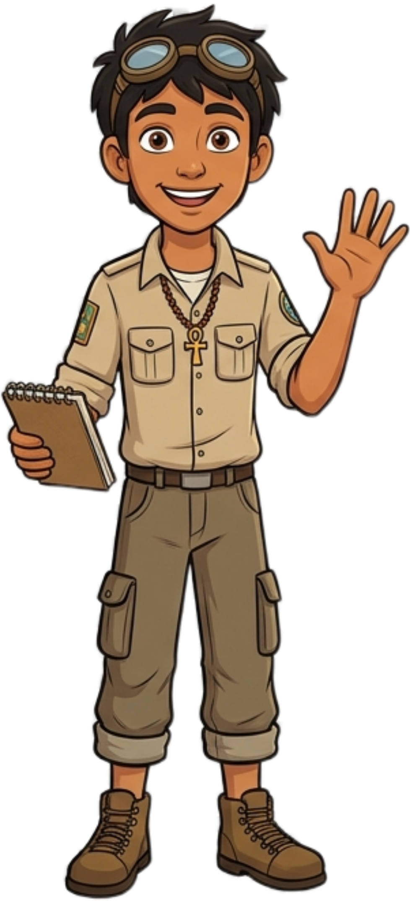
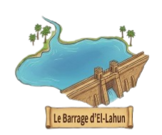
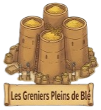
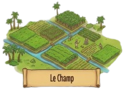
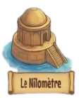
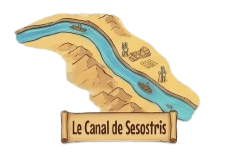

Chargement...

Salut ! Je suis Anis, ton guide. Une tempête a caché les mots sacrés du papyrus de notre royaume !
Ta mission : Explore la carte, écoute mes indices, et remplis ton sac à dos avec les mots perdus.
Mais d'abord, quel est ton nom, explorateur ?
📜 Le Papyrus Endommagé
« Pour sauver notre royaume, nous devons avant tout respecter [ ??? ] du Nil, source de toute vie. C'est dans cet esprit que nos paysans s'engagent à protéger [ ??? ] verte qui nous nourrit. De plus, le barrage d'El-Lahun garantit [ ??? ] contre les inondations, tandis que notre nouveau canal facilite [ ??? ] équitable des ressources entre les peuples. Ainsi, en unissant nos efforts et notre sagesse, nous protégeons [ ??? ] de nos enfants et assurons la prospérité de notre terre. »





Mon Sac
Titre
Texte de synthèse...
Question ?
Restaurer le Papyrus
Clique sur les mots pour remplir les vides dans le bon ordre !
« Pour sauver notre royaume, nous devons avant tout respecter [ ??? ] du Nil, source de toute vie. C'est dans cet esprit que nos paysans s'engagent à protéger [ ??? ] verte qui nous nourrit. De plus, le barrage d'El-Lahun garantit [ ??? ] contre les inondations, tandis que notre nouveau canal facilite [ ??? ] équitable des ressources entre les peuples. Ainsi, en unissant nos efforts et notre sagesse, nous protégeons [ ??? ] de nos enfants et assurons la prospérité de notre terre. »
Mots trouvés :
⚖️ La Balance de la Justice
ODD 16 : L'histoire se répète. Aucune société ne peut survivre sans la Vérité, la Justice et des Institutions fortes.